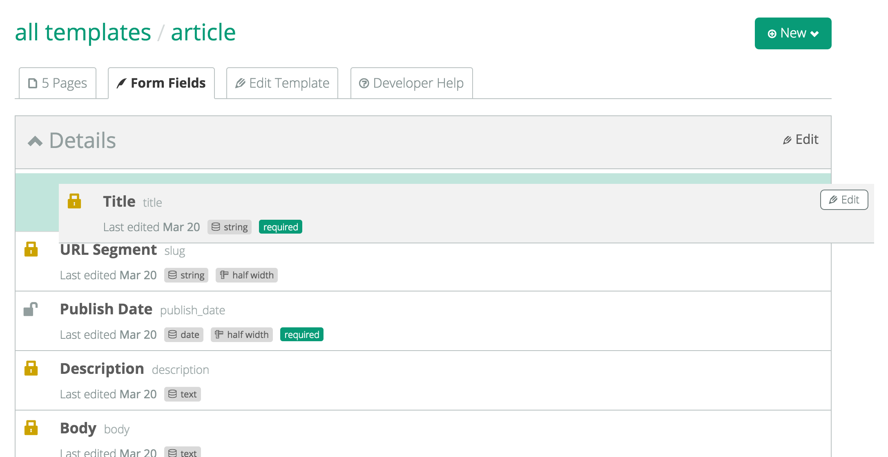

v1.2 Brings Major Workflow Enhancements
When I released v1.0, I found that the idea of separating page types and templates was confusing, and I agreed with the feedback. v1.1 worked to consolidate page types and templates into one, where every single page has a template and that template designates the file that is to be rendered when that page is viewed. Simple enough.
The consolidation was complex enough that I didn't worry much about the design or workflow that went along with it. And it quickly became apparent that there was confusion not necessarily in the new way templates worked, but how to make templates and pages work together through the app. In other words, the UI needed help.
That's why v1.2 focused on further enhancements to pages and templates, while it also worked to distinguish users of the app into two roles -- developer or site user. And, while v1.2 was in full development, I had what I'm calling a sponsored request to bring forms into the v1.2 release.
What I ended up with was a release that was much larger than I originally anticipated. A few weeks and 99 commits later, we have an app that I believe is worlds better than its v1.1 ancestor.
Below you will find the specific improvements v1.2 brings to Sapwood. To upgrade to v1.2 look here.
Surfacing & Organizing Data
From the beginning, the goal of Sapwood was to be simple and easy to use, while also being a little prettier than some of its counterparts, like WordPress. That's a difficult combination of attributes to obtain, especially in considering how flexible Sapwood is (the whole starting from scratch and building simple site with complex data structures thing).
I spend a lot of time using GitLab and GitHub. I took inspiration in the way each application organizes its issue tracker within its over repository modules. You can see this inspiration come together in Sapwood 1.2.
What we're now left with is more organized content. Breadcrumbs and titles were combined, filters were added, and more data and actions related to a list of components were surfaced in index (list) views. This lessens the number of clicks for some tasks, while making finding other attributes a lot easier.
That's a general snapshot of what was affected overall. To explain every nuance that was added would be tiresome and useless. The screenshot below is the new pages index listing for the Sapwood site, and that design is now carried throughout the app.

Quick Edit for Template Fields
One area that was a huge drain on workflow efficiency was in how long it took to create (and later edit/move) template fields. We now have more data surface on the listing of fields, which gives you a much quicker snapshot of the form you are building for the pages of that template. There is also the ability to drag and drop fields (and group) to reorder them on the fly.

User Roles
While user roles/permissions will likely become more complex over time, for now we really only need two roles within a Sapwood application -- developer and editor.
A developer is an administrator. They have access to all sites within the application and they have the ability to build out the content structure of those sites.
Your clients, and perhaps some of your teammates, are your editors. Their only purpose is to edit the content on the site. For that reason, they have access to:
- view and edit pages
- view and add media
- view form submissions
Beyond that, they don't need more control, although likely permissions will become more dynamic as that request moves to the top of the list.
Quick File Improvements
Uploading to Amazon S3 is nice because there is no max capacity. However, Sapwood isn't built to be a file management solution. And because of that, we transitioned to local file storage. This is simpler, safer, and more efficient. When the time comes, there will be further improvements made, but we're building as we need it, so for now this is the idea solution.
Other Improvements
Beyond the changes above, there were some other, smaller improvements made. Here's a list that's probably still missing some new features:
- form fields have drag and drop reordering
- form submissions can be exported to CSV
- there are dynamic methods available for retrieving pages of a certain template within a site (see the service object for a little more info)
- page parents and templates can be changed on the fly via the "move" form